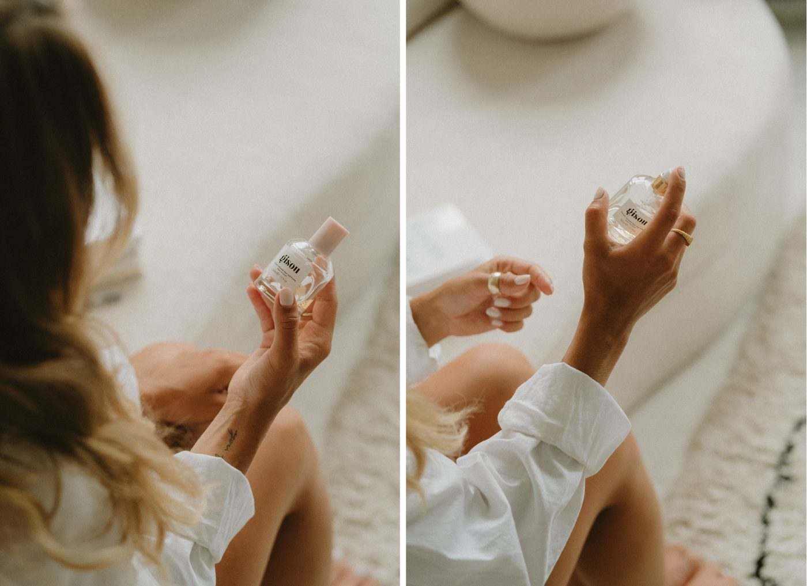
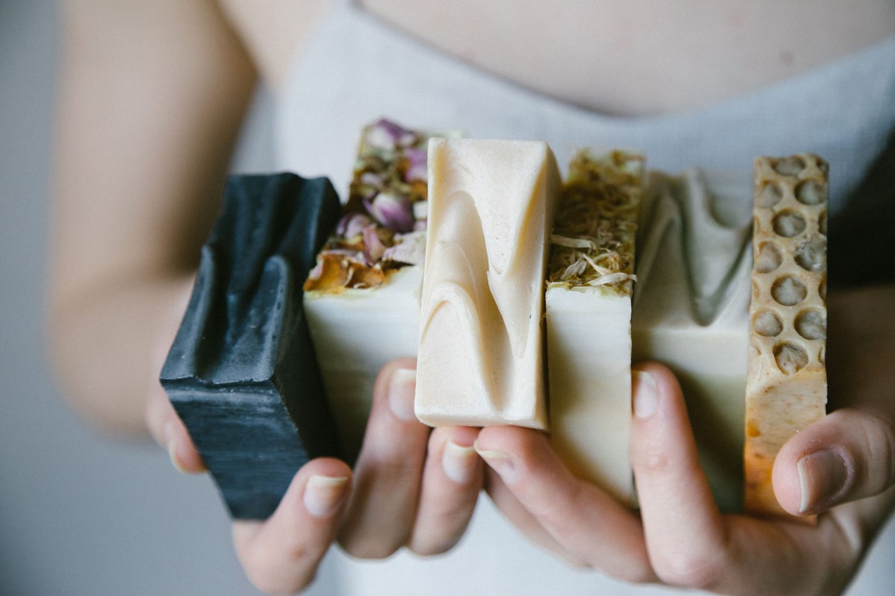

I stop for dogs on walks. I've been known to pull over for a cat. My Labrador has his own side of the bed, and I think about his feelings more than I think about most things. So when I started looking more carefully at the beauty brands I'd been buying for years — the ones I repurchased without thinking, the ones on my vanity table I've ever owned — something uncomfortable settled in.
This isn't a campaign or a call to action. I'm not interested in anyone's skincare drawer but my own. But I found things I couldn't un-find, and I needed to write about them — the way you do when something quietly rearranges how you see the world.
What follows is what I learned: the brands I'm stepping away from, the science that makes old justifications hard to hold onto, and the alternatives I'm genuinely excited about. Take what's useful. Leave the rest.
The Brands I'm Quietly Stepping Back From
Most recognizable beauty names are owned by much larger parent companies — and when you buy from a brand, you're buying into its parent's practices. This is the part that quietly rearranged things for me. Here's what I found when I actually looked.
- Maybelline
- Garnier
- Kiehl's
- Lancôme
- Biotherm
- La Roche-Posay
- CeraVe
- Cacharel
- Estée Lauder
- Clinique
- MAC Cosmetics
- Bobbi Brown
- La Mer
- Origins
- Aramis
- Neutrogena
- Aveeno
- Pantene
- Olay
- Head & Shoulders
- Herbal Essences
- Gillette
- Always
- TRESemmé
- Dove
- Vaseline
- Sunsilk
- REN Clean Skincare
- Kate Somerville
- NARS
- BareMinerals
- Laura Mercier
- Drunk Elephant
- Buxom
- OPI
- Rimmel
- Kylie Cosmetics
- Almay
- Method
- Ecover
- Mrs. Meyer's
- Benefit
- Makeup Forever
- Elizabeth Arden
- GLAMGLOW
- Victoria's Secret
- Bath & Body Works
- Chanel
- Dior
- Gucci
- YSL
- Burberry
- Versace
- Prada
- Marc Jacobs
- Carolina Herrera
I had La Roche-Posay in my medicine cabinet for two years before I looked this up. Chanel Chance Eau Splendide was a repurchase I made on autopilot — the kind of thing you reach for without thinking, which is exactly the problem. Method home cleaning products I bought specifically because it felt like the conscious choice. Learning that all three sit under parent companies without cruelty-free certification took an actual moment to sit with. Not guilt, exactly. More like the quiet discomfort of realizing you've been moving through something without really looking at it.
The Excuse That No Longer Holds
For a long time, the standard justification from large beauty companies was market access: to sell in mainland China, animal testing was a legal requirement. It was framed as a binary — test on animals or lose one of the world's largest markets. Many brands chose the market.
But the regulatory landscape has fundamentally shifted. As of 2021, general cosmetics imported into China can bypass mandatory testing if brands provide a Certificate of Good Manufacturing Practices and a comprehensive safety assessment. By 2026, China has implemented additional non-animal methods, including the kDPRA assay for skin sensitization. The EU has prohibited animal testing for cosmetics — both the finished product and individual ingredients — since 2013. The FDA, under MoCRA, does not require animal testing to substantiate cosmetic safety. Several U.S. states have passed bans. The UK has moved toward full replacement of animal skin and eye tests.
The decision to continue animal testing is, more often than not, a business choice — not a regulatory necessity.
There Are Better Ways — and They Work
Regulatory bodies including the FDA and EU counterparts now accept over 40 validated non-animal testing methods. These alternatives are, in many cases, faster, cheaper, and more predictive of actual human reactions than animal tests. Here's what the science actually looks like:
Human cells and 3D reconstructed skin tissue models test for irritation, corrosion, and sensitization in a lab — without a single animal.
Advanced software simulates how the human body responds to a compound using Quantitative Structure-Activity Relationships. High accuracy, zero biology required.
Thousands of cosmetic ingredients already carry decades of proven safety data. Brands can formulate entirely from these — skipping new testing entirely.
Controlled clinical trials with consenting volunteers verify finished product safety on actual human skin. More relevant, more ethical, and increasingly the standard.

Choosing what sits on my vanity table is starting to feel like a small, deliberate act of care.
What to Look For Instead
Third-party certifications are the only reliable way to verify a brand's commitment. A product label that says "not tested on animals" is a self-reported marketing claim — there's no verification behind it. These are the three certifications I actually trust:
The gold standard. Leaping Bunny audits a brand's entire supply chain — not just the finished product — and requires mandatory annual recommitment. If a brand has this logo, it's the real thing.
A well-known certification covering both cruelty-free and vegan products. PETA's database is searchable and regularly updated — a useful first stop when checking a brand.
Certifies products that are both cruelty-free and contain no animal-derived ingredients. The most comprehensive option if you want to align both values at once.
How to Check Before You Buy
Memorizing brand lists isn't realistic — and the landscape shifts quietly. Parent company acquisitions happen without headlines, and a brand's cruelty-free status can change overnight. These are the two resources I check before adding anything new to my routine:
A comprehensive, independently maintained database of cruelty-free and vegan brands. Search any brand by name and you'll see its current status, which certifications it holds, whether it sells in mainland China, and who the parent company is. The site also tracks status changes — which happen more than you'd expect. It's free to use and is one of the most trusted independent references in this space. I use it every time a brand is new to me.
A barcode-scanning app you can use while you're standing in a store aisle. Point your phone at any product and Think Dirty pulls up the full ingredient list, rates each ingredient for potential health and environmental concerns, and gives the brand an overall transparency score. It's less focused on the cruelty-free question specifically — that's where Cruelty-Free Kitty is stronger — but it fills in everything the cruelty-free label doesn't tell you: what's actually in the formula and whether those ingredients carry any red flags. Between the two, you have the complete picture: ethics and ingredients, both covered.
The habit I've built: Cruelty-Free Kitty for a brand's ethics status, Think Dirty for what's actually in the formula. Two minutes, and it becomes automatic.
The Brands I'm Genuinely Excited to Support
These brands have achieved Leaping Bunny or PETA certification, or have made verifiable commitments to cruelty-free practices across their full supply chains. Several I was already using and didn't know. A few I discovered during this research and am genuinely glad I did.
My Shelf Swap Guide
If you want somewhere concrete to start, here's where I'm starting. These aren't compromises — every one of these alternatives is genuinely good.

The brands making it easier to choose kindness without compromising on quality.
A Note on Fragrance
Fragrance is where I used to feel most stuck. The big houses — Chanel, Dior, Gucci, YSL, Versace, Burberry, Prada, Jo Malone London — none hold cruelty-free certifications. For a while I kept quietly buying them and not thinking too hard about it.
But there's a whole world of certified cruelty-free fragrance brands that genuinely deserve attention. Some are small and independent. Some are more accessible than you'd expect. Dossier, for instance, creates high-quality affordable scents inspired by classic luxury fragrances — a direct, honest alternative. Here are the ones I've been exploring:
- Phlur
- Pinrose
- Le Labo
- Skylar
- Arquiste
- Maison Louis Marie
- Billie Eilish Fragrances
- Clean Beauty Collective
- Parfums de Marly
- Henry Rose
- Lush
- Floral Street
- Stella McCartney
- Lolita Lempicka
- Honoré des Prés
- Dossier
I'm not pretending a bottle of Phlur hits the same way as a bottle of Chanel No. 5. But I'm also not pretending the difference is worth what it costs me — in every sense of that word. Some of these are genuinely beautiful. Some have become new favorites. That's the honest version.
What Darling, What If Stands For
At Darling, What If, I believe that a beautiful life should be built with compassion. I think about this more than I let on.
I think about the horses in Central Park — pulling carriages through traffic while tourists take photos. I think about the rabbits, dogs, cats, and other animals used in laboratories for products we often consider necessities. I think about the fact that, for a long time, somewhere in the back of my mind, I knew. And I kept reaching for the same products anyway.
Kindness should never be considered optional. Not when it's inconvenient. Not when it costs a little more. Not when it requires learning something we'd rather not know. I believe we have a responsibility to question the systems we participate in — even the ones that have long been accepted as normal. Creating a softer life cannot be only about how we care for ourselves. It has to include how we care for those who cannot advocate for themselves.
Horses should not spend their lives pulling carriage rides for entertainment. Animals should not suffer for beauty products. No living being should endure cruelty, exploitation, or neglect in the name of convenience, profit, or tradition.
So here is what this brand stands for, clearly and intentionally: Darling, What If will not partner with companies that test on animals or profit from cruelty in any form. I do not support animal cruelty in the name of entertainment, beauty, or profit. That line is not negotiable, and I am not embarrassed to say it out loud.
This commitment is not about perfection. It is about accountability. It is about choosing empathy when indifference would be easier. It is about recognizing that the gentleness we extend to animals reflects the kind of world we are helping to create.
I may only be one person making small choices each day. But I believe those choices matter. And if enough of us choose kindness — in what we buy, what we support, and what we speak up for — something shifts. Maybe slowly. But it shifts. If Darling, What If stands for anything, I hope it stands for this: that softness is not weakness, compassion is not naïveté, and caring deeply is one of the quietest forms of courage.
Live gently. Ask difficult questions.
Choose compassion where you can.
Creating a softer life means caring not only for ourselves, but also for those who cannot speak for themselves. That's why I do not support animal cruelty in the name of entertainment, beauty, or profit. Kindness should never be considered optional. I believe the choices I make — and the choices our team makes as a brand — have the power to influence something greater. I may only be one person making small choices each day, but I believe those choices matter. And if enough of us choose kindness — in what we buy, what we support, and what we speak up for — perhaps we can help create a more compassionate future for all living beings. That's enough of a reason to start.
拥抱“零残忍”（Cruelty-Free）是实现善良生活的重要一步，
美丽而不残忍
创造一种更善良美好的生活方式，不仅意味着照顾好自己，也意味着关心那些无法为自己发声的脆弱生命。正因如此， 我更愿意支持那些认真看待自然环境，也积极配合的美妆和香水产品品牌。善良，从来不应该是一种可有可无的选择。 我相信，我所做的每一个选择 — 以及我们作为品牌所做的每一个选择 — 都有力量去影响比自己更广阔的世界。 也许我只是一个每天做着微小选择的人，但我相信，每一个选择都是有意义的。而如果有越来越多的人愿意选择善良 — 在我们购买什么、支持什么，以及为哪些事情发声时 — 那么或许，我们能够共同创造一个对所有生命都更加温柔、 更富有同理心的未来。以这个理由去做更有意义的事，创造更有意义的生活，足以。让我们一起支持零残忍产品吧。